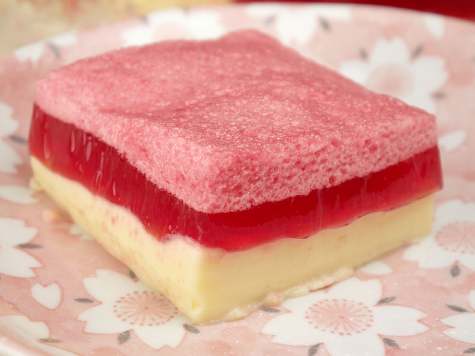

Creme Chines
Ingredientes
1 lata de leite condensado
3 ovos (separe as gemas das claras)
3 latas de leite (usar como medida a lata do leite condensado)
3 colheres (sopa) cheias de amido de milho
2 gelatinas sabor a sua escolha
6 colheres (sopa) de açúcar refinado
Modo de Preparo
Bata no liquidificador o leite condensado, as gemas, o leite e o amido de milho.
Despeje em uma panela e leve ao fogo mexendo bem até ferver. Despeja em um pirex e reserve.
Prepare a gelatina conforme as instruções da caixinha. Bata as claras em neve, acrescente o
açúcar com a colher.
Misture a gelatina dissolvida com a clara delicadamente. Despeje em cima do creme e leve à
geladeira até que a gelatina endureça.
Deve ficar 3 camadas, uma do creme, outra da gelatina e outra das claras.
Dica: Depois que o creme estiver pronto, bata no liquidificador e coloque no pirex e leve
à geladeira por uns 15 minutos.Depois, coloque por cima a gelatina misturada com as claras.